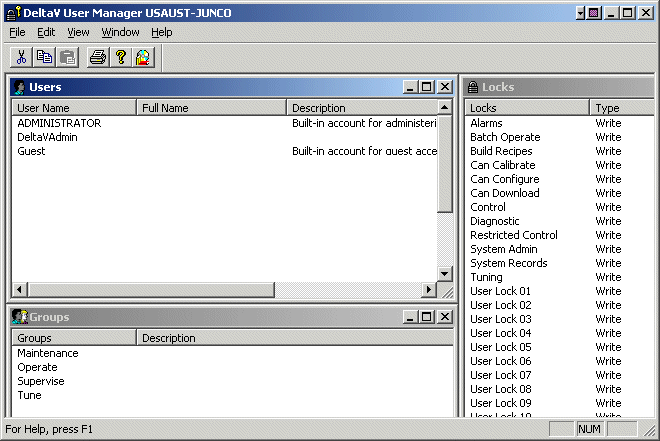
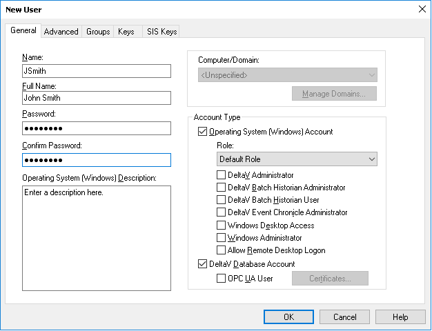

Log on
Users might be unable to log on to the DeltaV system for several reasons:
- The user might not have an account on the workstation.
- The user might not have an Operating System (Windows) account and/or a DeltaV Database Account.
- The user might not have a password or might have forgotten the password.
Perform the following actions.
- Use the DeltaV User Manager to verify that the user has an account on the workstation. Click . The DeltaV User Manager program opens.

If the user's name does not appear in the list of users, create an account for the user. If the user has an account, verify that the user has an Operating System (Windows) account and/or a DeltaV Database Account.
- Create a new user account by clicking . The New User dialog opens.

- Enter the user's username in the Name field. The username is the name that identifies this user to the DeltaV system. For example, Jsmith.
- Enter the user's full name in the Full Name field. The full name identifies the user to the system administrator rather than to the DeltaV system (for example, John Smith).
- Enter a password for this user in the Password field. (Make a note of the password because you will give this password to the user.)
- Retype the password in the Confirm Password field to confirm that this is the correct password.
- Click DeltaV Database Account to allow this user to log on to the DeltaV system. Select an Operating System (Windows) Account to allow this user to log on to the DeltaV system from this machine.
- Write a short description of the account in the Operating System (Windows) Description field.
- Click OK.
- Download the runtime database with the new information.
A user might have an account but might lack the required account type. There are two account types:
- DeltaV database account
- Operating System (Windows) Account
The DeltaV database account defines the set of DeltaV privileges that a particular user has. Users cannot log on to the DeltaV system without a DeltaV database account. An operating system account allows DeltaV users access to the DeltaV system on a specific machine. DeltaV users can log on to a specific machine only if they have an operating system account on that machine. To verify user accounts, perform the following tasks:
- Double-click the user's name.

The Properties for User dialog box opens.
- Verify that both account types (Operating System (Windows) Account and DeltaV Database Account) are checked, and then click OK. However, if one of the account types is not checked, click the check box for that account type, and then click OK.
- Download the workstation.
Users might be unable to log on because they forgot the password or because their accounts were created without a password.
To create a new password:
- Open the DeltaV User Manager.
- In the list of names, double-click the user's name to open the Properties for User dialog box.
- Enter a password for this user in the Password field. Make a note of the password because you will give this password to the user.
- Retype the password in the Confirm Password field to confirm that this is the correct password.